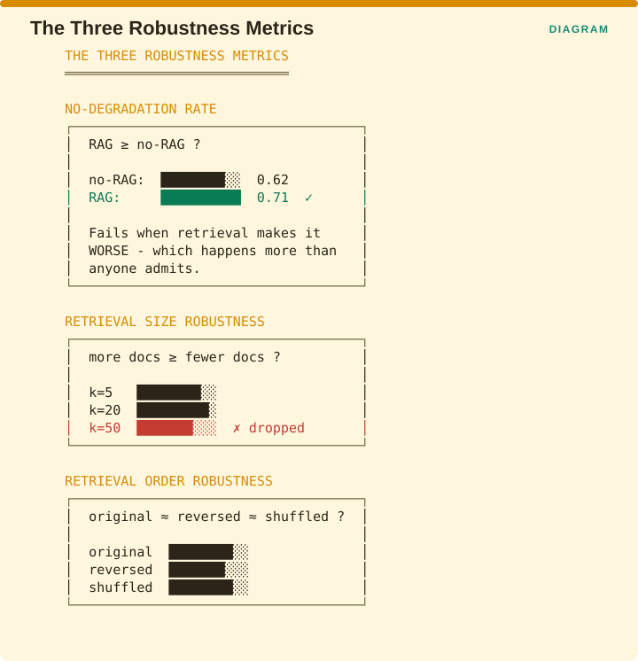

Measuring Retrieval › B.4 Robustness - the perturbation family
B.4 Robustness - the perturbation family
B.4.1 Retrieval robustness
Source: Cao et al., Evaluating the Retrieval Robustness of Large Language Models · arXiv:2505.21870
The problem it solves
Adding retrieval to a language model is supposed to make it better, and most of the time it does. The question nobody asks is what happens on the queries where it does not, and whether feeding the model more documents or the same documents in a different order changes its answer. Those three questions have answers you can measure.
The three metrics
The paper introduces three retrieval robustness metrics, being the no-degradation rate, retrieval size robustness and retrieval order robustness, which together quantify how reliably a model handles queries through RAG.
They derive from an explicit three-part definition. A model is retrieval robust if its RAG performance is equal to or better than its non-RAG performance, if adding more retrieved documents leads to equal or better performance, and if its performance is invariant to the order in which the retrieved documents are presented.

The figure illustrates each. No-degradation rate asks whether RAG beats no-RAG, so in the example the model scores 0.62 without retrieval and 0.71 with it, which passes. This is the test that fails when retrieval makes the answer worse, which happens more often than anyone admits. Retrieval size robustness asks whether more documents beat fewer, and in the example performance rises from k=5 to k=20 and then drops at k=50, which fails. Retrieval order robustness asks whether the original, reversed and shuffled orderings give comparable results.
Experimental setup
| Element | Detail |
|---|---|
| Benchmark | 1,500 questions - 500 each from NQ, HotpotQA, and ASQA |
| Retrieval | Wikipedia, using both sparse and dense retrievers |
| Retrieval sizes tested | 5 to 100 documents |
| Orderings tested | original rank, reversed rank, random shuffle |
| Models | 11 LLMs from 5 families, open and proprietary |
| Prompting | 3 strategies |
| Correctness scoring | LLM-as-judge (LLaMA-3.3:70B), not string match |
That last row is worth noting, because the authors deliberately moved away from string-match scoring, which means these robustness figures inherit a dependency on a language model judge and therefore inherit the drift problem §B.5 describes.
The result, and the caveat that is the actual finding
Models achieve over 80% on the geometric mean of the three metrics. Read on its own that is reassuring, since it says that RAG usually beats non-RAG, more documents usually help, and order usually does not matter much.
The paper’s conclusion identifies what that aggregate conceals.
Imperfect robustness results in sample-level trade-offs, often hurting the performance of some samples for the improvement of others, which forfeits RAG’s potential gains.

The figure unpacks what a nine-point system-level gain can be made of. At system level the score moves from 0.62 without retrieval to 0.71 with it. At sample level, 34% of samples improved, 19% got worse, and 47% were unchanged.
So RAG did not gain nine points. It gained thirty-four and lost nineteen, and the nine is what was left over. Nineteen percent of users received a worse answer than they would have with no retrieval at all, and no aggregate number will ever show you that. The split shown is illustrative, since the paper reports the phenomenon rather than these particular figures.
A second finding carries a direct architectural implication. Incorporating outputs generated from the model’s own knowledge can improve retrieval robustness and can also limit the best performance RAG is able to reach. Hedging against retrieval failure costs you retrieval upside, and that is a genuine trade-off rather than a tuning problem.
Recommendation
Do not evaluate robustness at the aggregate level alone. Compute the no-degradation rate for each sample and report the degraded fraction explicitly, because a higher mean can coexist with degradation on a fifth of your queries, and that redistribution of quality is the thing your users experience.
If you can segment by query class, do so, because a 19% degradation rate concentrated in one customer segment is a very different problem from 19% spread evenly across all of them.
B.4.2 Query-level robustness under perturbation
One-line: Per-query robustness under input perturbation.
Facets: Integrity/Drift | query | free | E2E | EMERGING VERIFIED Source: Perçin et al., GEM 2025 · arXiv:2507.06956
This is the complement to §B.4.1, measured at a finer unit. An aggregate robustness score can hide a query class that is catastrophically fragile, and query classes tend to map onto user segments, which map onto particular customers.
Recommendation: if you adopt one robustness measure, prefer the query-level one and segment it by query class, because a green aggregate can conceal a use case that is entirely broken for one group of people.
B.4.3 Temporal freshness - Latest@10
One-line: Whether a recency prior actually surfaces the freshest relevant item.
Facets: Integrity/Drift | query | ref | R | EMERGING VERIFIED Source: arXiv:2509.19376
Why it is here: a citable negative result
The obvious fix for stale results is to weight recent documents more heavily. This paper tests that recency prior on three corpora of increasing realism, and the honest finding is that freshness obtained this way is partial and highly sensitive to the parameter you choose.
The specifics are instructive. On a synthetic stream, Latest@10 reached 1.00, which the authors themselves describe as a sanity check, since near-identical embeddings within a topic reduce the task to sorting by date. On the CERT logon corpus of 849,579 events, it reached 1.00 only with a recency weight tuned for that corpus, and scored 0.00 at the default that had been tuned on the synthetic data. On NVD CVE descriptions it improved from 0.00 to 0.60, beating a semantic-then-newest baseline that scored 0.20.

The figure states the cliff plainly. A recency weight tuned on corpus A gives Latest@10 of 1.00 on corpus A, and the same weight applied to corpus B gives 0.00. So the right response to a team announcing they enabled the recency prior is to ask whose tuning they used.
A metric that swings from 1.00 to 0.00 on a hyperparameter carried across from another corpus is not something you can adopt from a blog post.
The paper also reports that labelling weekly clusters as growth, drift or decay scored only 0.08 macro-F1 under a fixed-threshold rule, rising to 0.49 once the labelling rule was corrected and to 0.96 once clustering noise was removed. The failure was in the labelling rule rather than in the clusterer, which is worth knowing before you blame your clustering.
Recommendation: cite this whenever somebody proposes a recency-weighting heuristic. It is the strongest published evidence that the obvious fix does not transfer between corpora.
Measuring Retrieval · Madhava Gaikwad · First edition, September 2026